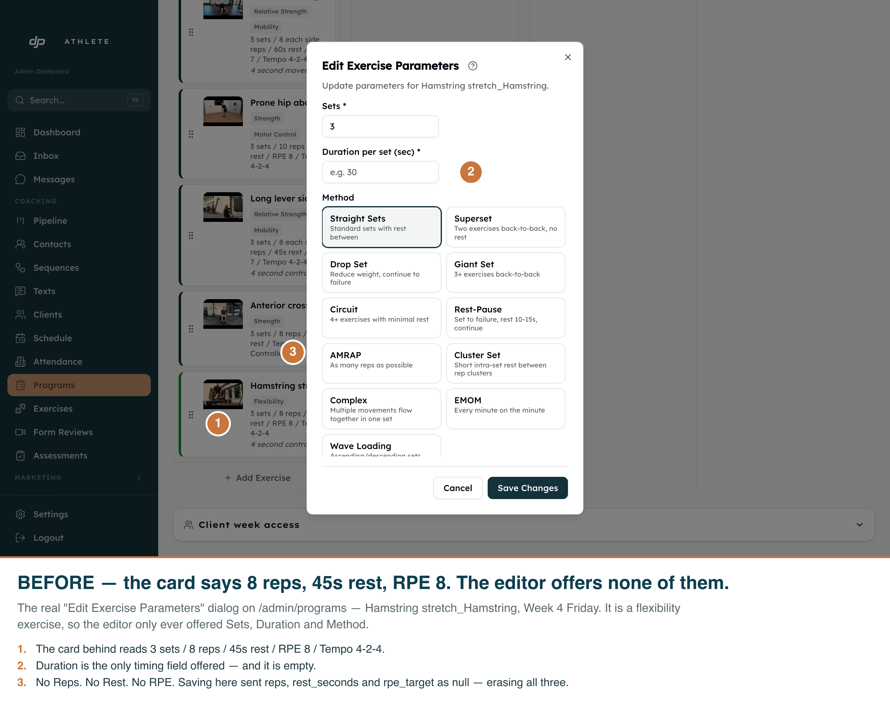
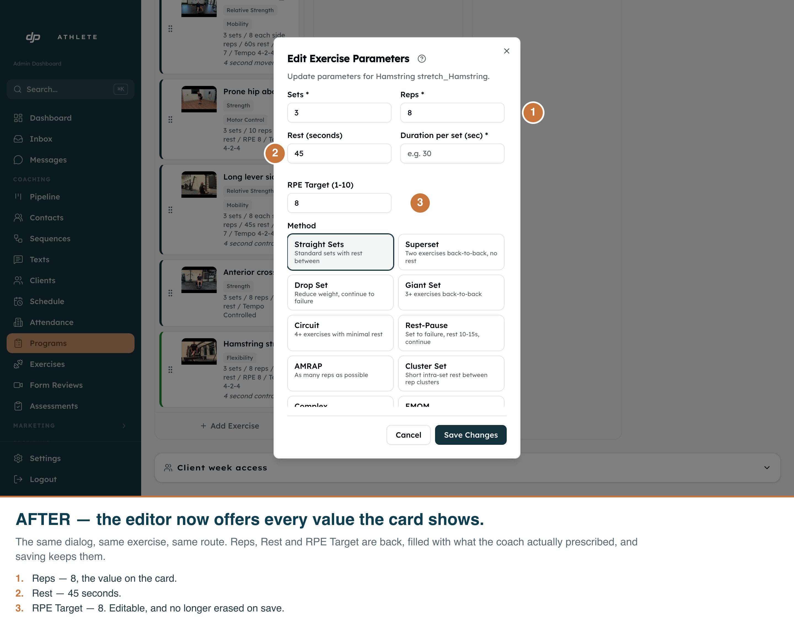
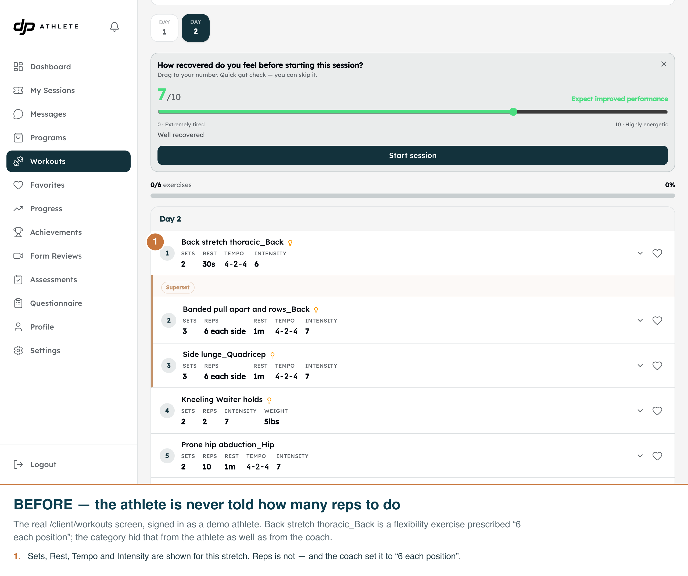
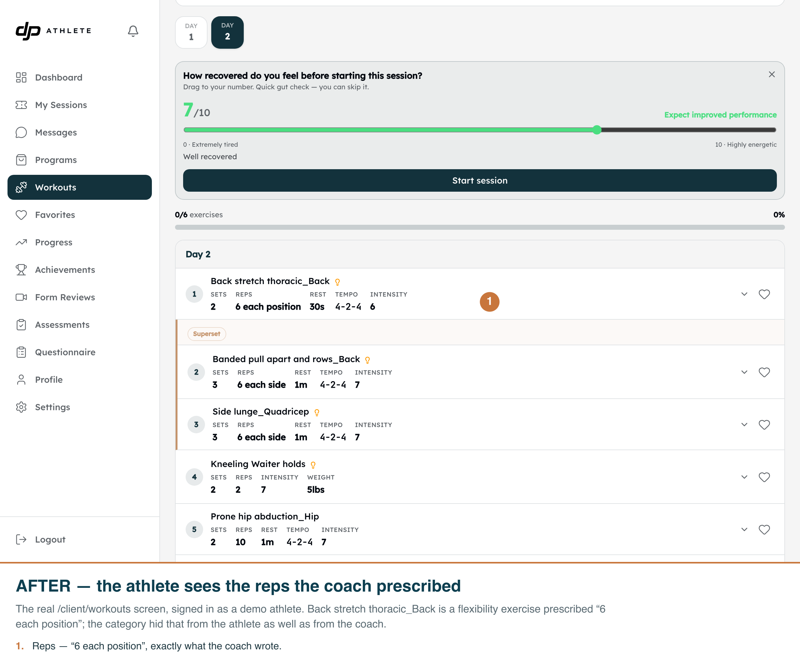

Reported 2026-09-16 from the program builder. Every shot below is the real app on its real route, driven with Playwright; the two halves of each pair were captured against two real builds, with the source change reverted for the “before” pass.
flexibility exercise never got Reps, Rest or RPE — even when
the coach had set all three. Worse, the form submitted null for every input it did not
render, and the PATCH route writes every key it is handed, so saving an unrelated tweak wiped them.




| Field | Stored value | Before — sent on save | After — sent on save |
|---|---|---|---|
reps | "8" | null — erased | "8" |
rest_seconds | 45 | null — erased | "45" |
rpe_target | 8 | null — erased | "8" |
tempo | "4-2-4" | "4-2-4" | "4-2-4" |
intensity_pct | null | null (harmless here) | key omitted |
| Field the editor hid but the row carries | Rows affected |
|---|---|
rest_seconds | 470 |
reps | 169 |
rpe_target | 118 |
suggested_weight_kg / intensity_pct | 0 |
| Step | Command |
|---|---|
| Dev server | npm run dev (port 3050) |
| Coach’s view | node scripts/capture-hidden-exercise-params.mjs --phase after |
| Athlete’s view | node scripts/capture-athlete-prescription.mjs --phase after |
| “Before” halves | revert the three source files, let dev recompile, then run each with --phase before |